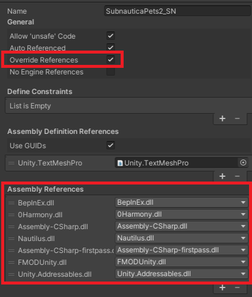
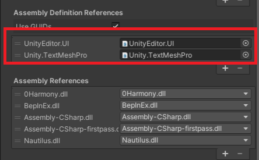
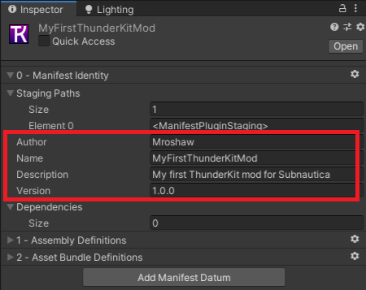
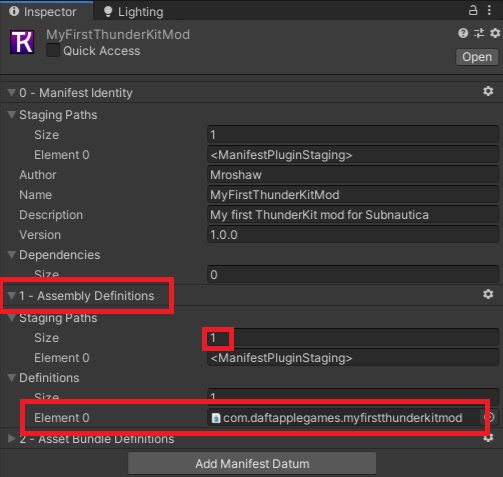
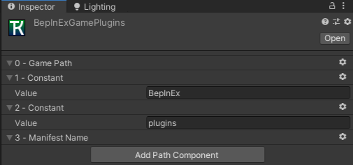
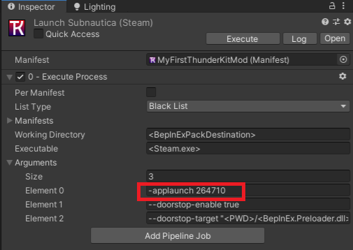
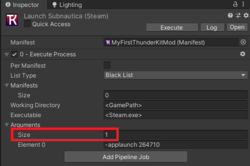
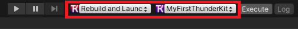
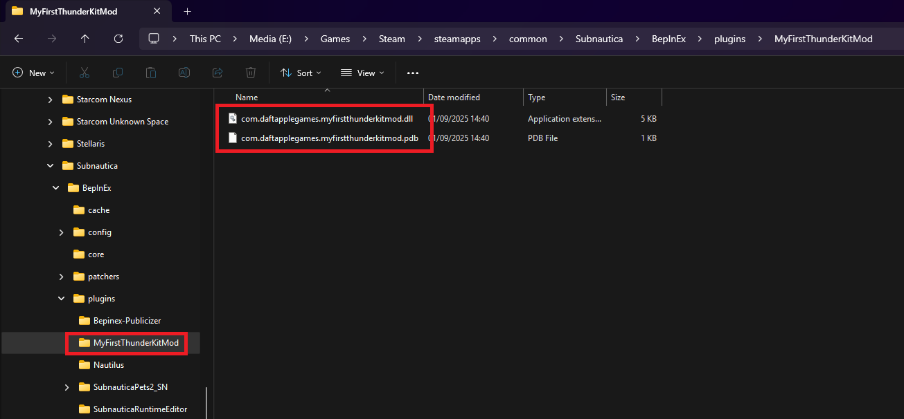
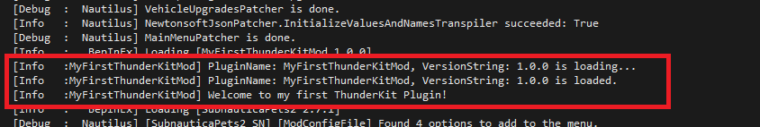

Configure your ThunderKit Mod
Now that ThunderKit is installed, you can set up your modding environment.
Set up assembly references
-
In the Project view, go into the "Assets" root folder, right click, and create a new folder for your mod. For example, "MyFirstThunderKitMod".
-
Within that, create a folder called "Scripts".
-
Within this folder, right click and select the "Create > Assembly Definitions" menu item.
-
This file is vital, as it forms the basis of the mod DLL that you'll deploy to the game. It also prevents conflicts with the base game assemblies.
-
Name the file something sensible and unique. I typically use this sort of format:
com.daftapplegames.myfirstthunderkitmod. -
With the file still selected, check the "Allow 'unsafe' code" and "Override References" options.
-
Under "Assembly References", click the "+" button to add each of these items:
-
0Harmony.dll
- BepInEx.dll
- Assembly-CSharp.dll
- Assembly-CSharp-firstpass.dll
- Nautilus.dll

-
If you plan on doing any coding with TextMeshPro and the UI, you can also add these to the "Assembly Definition References" properties:
-
Unity.TextMeshPro

Create your mod script
Now you can create your mod code!
-
In the "Scripts" folder, right click and select "Create > C# Script".
-
Call it something like "MyFirstThunderKitModPlugin.cs"
-
Double click this new file to open it in Visual Studio or Rider.
-
It's always good practice to contain your code in a unique namespace. I usually follow a pattern to ensure uniqueness, so I prefix everything with
DaftAppleGames. You should use something different. For testing, you can use this code:
using BepInEx;
using HarmonyLib;
namespace DaftAppleGames.MyFirstThunderKitMod
{
[BepInDependency("com.snmodding.nautilus")]
[BepInPlugin(MyGuid, PluginName, VersionString)]
public class MyFirstThunderKitModPlugin : BaseUnityPlugin
{
private const string MyGuid = "com.daftapplegames.myfirstthunderkitmod";
private const string PluginName = "MyFirstThunderKitMod";
private const string VersionString = "1.0.0";
private static readonly Harmony Harmony = new Harmony(MyGuid);
private void Awake()
{
Logger.LogInfo($"PluginName: {PluginName}, VersionString: {VersionString} is loading...");
Harmony.PatchAll();
Logger.LogInfo($"PluginName: {PluginName}, VersionString: {VersionString} is loaded.");
Logger.LogInfo($"Welcome to my first ThunderKit Plugin!");
}
}
}
Looks familiar? This is exactly the same code you'd write for a "normal" BepInEx mod.
Create a ThunderKit Manifest
Everything to do with ThunderKit works off a manifest. This is basically a definition of important features of your mod, that are used in various processes and tools.
-
In your mod folder, right click and create a new folder called "ThunderKit".
-
Still in Unity, in the "Project" window, navigate to "Packages > ThunderKit > Templates > BepInEx > Manifests"
-
Drag the "Default-BepInEx" manifest file to the "ThunderKit" folder that you created in the "Assets" folder.
-
This will create a copy of the manifest file in your assets location.
-
Click that newly created file and update it's properties:
-
Author - your name
-
Description - a brief description of the mod
-
Version - the version number of the mod:

-
Now expand the "Assembly Definitions" drop down.
-
Set "Definitions > Size" to 1 - that will create a new entry for you.
-
Now drag the Assembly Definition that you created earlier (in the Scripts folder) onto the "Element 0" entry:

-
Don't worry about "Asset Bundle Definitions" at the moment - we'll cover that in a separate section in the future.
-
Check the "Quick Access" box for this manifest to appear in the quick access drop downs that ThunderKit adds to the Unity editor UI.
-
Okay, that's your manifest sorted!
Create a ThunderKit Pipeline
One of the cool features of ThunderKit is it's pipelines. These are configurable asset components that let you automate a bunch of stuff, such as compiling your mod, deploying it to the game plugin folder, and even running the game.
We'll create new pipeline assets for our mod, using the examples that are provided when ThunderKit is installed.
- Still in Unity, in the "Project" window, navigate to "Packages > ThunderKit > Templates > BepInEx > Pipeline"
- Drag each of these files to the "ThunderKit" folder that you created in the "Assets" folder:
- Stage
- Deploy
- Rebuild and Launch
- SteamBepInExLaunch
- BepInExLaunch
- Now that you have local copies of these files in the Asset folder, you can make any changes you want to them.
Create a game plugin PathReference
-
Right click the your "ThunderKit" folder and select the "ThunderKit > PathReference" menu item.
-
Call this new file "BepInExGamePlugins".
-
With this file selected, click the "Add Path Component" button in it's properties window.
-
Select "Game Path".
-
Click "Add Path Component" to add another. This time, select "Constant".
-
Enter the value "BepInEx"
-
Add another "Constant" path component with value "plugins".
-
Finally, add a "Manifest Name" path component:

That gives us a dynamic path to which our mods files will be placed, when we deploy them to the game.
Configure the Stage pipeline
- Click the "Stage" file - this will essentially compile your mod and stage the files in a temporary location.
- Drag your mod manifest onto the "Manifest" entry, as this will allow you to test it in isolation.
- Click "Execute" to run the stage pipeline job.
Configure the Deploy pipeline
- Now click the "Deploy" file - this will copy the staged files to your game BepInEx folder.
- Drag your mod manifest onto the "Manifest" entry for testing.
- Uncheck all but the "1 - Copy" pipeline jobs. Those other jobs do stuff with BepInEx and it's config, which we don't want to do.
- In the "1 - Copy" pipeline job, change the "Destination" property to:
<BepInExGamePlugins> - Click "Execute" to run the deploy pipeline job.
Configure the Launch pipeline (Steam only)
-
Click the "SteamBepInExLaunch" file and rename it to "Launch Subnautica (Steam)".
-
In the properties, drag your mod manifest onto the "Manifest" entry so you can test it.
-
Now expand "Arguments" and in "Element 0" change the game ID to 264710 (for Subnautica) or 848450 (for Below Zero):

-
Set the "Working Directory" to
<GamePath>. -
Now set the arguments size to "1" to get rid of the BepInEx parameters - we don't need those at the moment:

-
Click "Execute" and the game should run.
-
If you're not using Steam, you can directly execute the "BepInExLaunch" pipeline job.
Configure the Rebuild and Launch pipeline
-
Click the "Rebuild and Launch" pipeline file.
-
In the properties, drag your mod manifest onto the "Manifest" entry.
-
Drag your new "Stage" pipeline onto the first (array 0) element.
-
Drag your new "Deploy" pipeline onto the second (array 1) element.
-
Drag your new "Launch Subnautica (Steam)" or "BepInExLaunch" pipeline job onto the third (array 2) element.
-
Check the "Quick Access" checkbox.
-
You can now execute this directly, to build your mod, deploy it and run the game!
-
You can also do this from the Quick Access drop downs in the Editor UI:

The cool thing about this is that you can now create new folders for new mods, create a manifest for each, and re-use the pipeline jobs that you created earlier without having to create new versions. If you do this, you may want to move the pipeline and pathreference objects out of your mod folder into a folder on the Asset root. This shows they can be shared by multiple mod projects.
Test your mod
Let's see if that's all worked!
-
Having staged and deployed you mod, you should see if in your Subnautica game folder:

-
Run the game, and open up the "player.log" file from:
%LOCALAPPDATA%low\Unknown Worlds\Subnautica -
You should see the output from your log commands in your plugin script:
